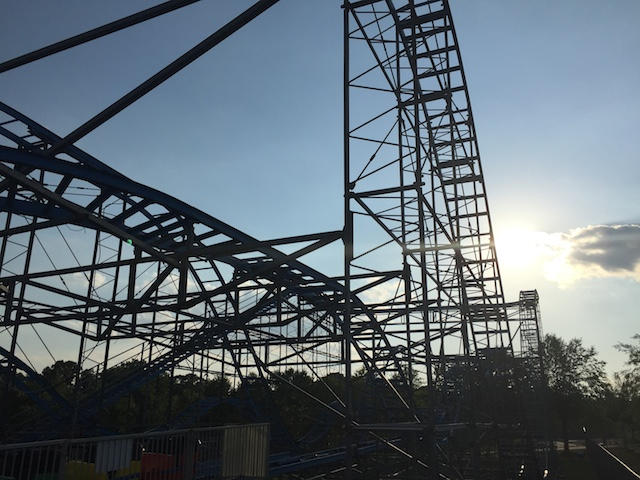
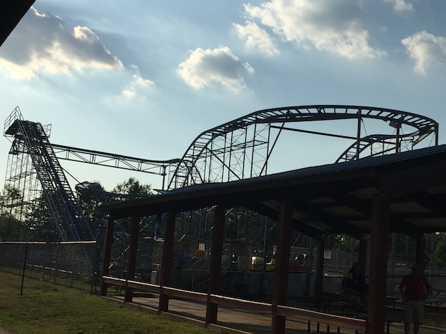
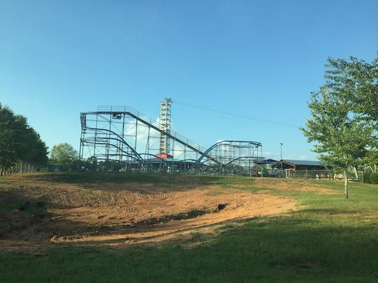
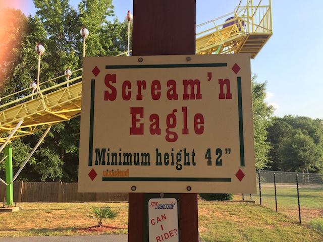

| |
Scream'n Eagle Review

For today's review, we are heading to Fun Junction U.S.A to review the Sceam'n Eagle. Now for most people, this just looks like a credit whoring coaster. And, yeah. Most enthusiasts who will ride this thing, are riding it for the sake of credit whoring. But in all honesty, as far as credit whoring coasters goes, this is actually quite a lot of fun. It's built by Miler, the same people who make all those kiddy coasters you've ridden too many of since you're a god damn credit whore. But don't worry. This is actually a really fun ride. So get in the car, pull down the lap bar, and away we go. We roll around a turn and begin climbing the lifthill. Yeah, there's no view, but keep in mind. We're in the middle of nowhere Georgia (Technically not the middle of nowhere. We're very close to the Atlanta Airport, but it certainly seems like the middle of nowhere). We crest the lifthill, go around a turn that feels kind of awkward, and then down the first drop. Oh god. It feels like a giant kiddy coaster. And we go down the first drop. It should not be going this fast!! Yeah. It feels like cars and track like this is meant for kiddy coasters, not full sized coasters like this! We then rise on up, losing some speed, but also gaining a nice pop of airtime. We go around the turn, head down another drop that may not seem that big on most coasters, but considering that this ride is flimsy and feels like a giant kiddy coaster, it's suddenly a lot more powerful. We gain that speed, head up another hill, get another nice pop of airtime, and go around a turn. There are actually some good laterals here. We head down a small little hill, go over a nice little hill, drop down to the ground, get some good airtime, rise up, and SLAM!!! We head around another sharp turn. OK, the slam isn't that bad as there are some trims right there, but you can tell that it clearly needs them. And yeah. We then head down a small hill, go over a tiny little airtime hill, that's surprisingly kind of agressive, up a little hill, and BAM!!! Around another sharp turn. This is Wild Mouse brutal right here. Down a small dip, and into the brake run. I know it's just a credit whoring coaster, but this thing is SERIOUSLY good. You know, it kind of reminds me of the Scandia Screamer in a way. OK. It's not nearly as good as Scandia Screamer. That ride is just F*CKING INSANE!!! But there's a little bit of that insanity in here. Some fun drops, some airtime, and some good laterals. It's a small little flimsy coaster in a Family Entertainment Center, but it's a FUN little coaster that I really enjoyed. If you're at the park, then I don't need to tell you to ride it.
6/10
Location: Fun Junction U.S.A
Opened at Wild Island in 2002
Moved to Fun Junction U.S.A in 2007
Built by: Miler Coasters
Last Ridden: June 23, 2016
Scream'n Eagle Photos



Home
|